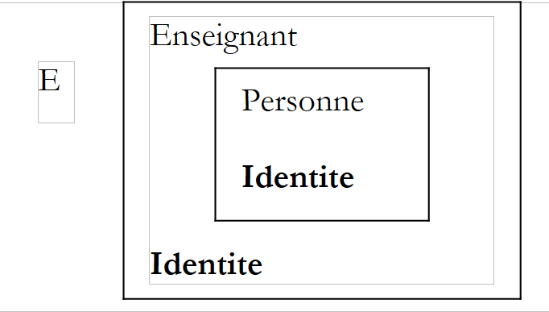

4. 类、结构体、接口
4.1. 通过示例理解对象
4.1.1. 概述
现在，我们将通过实例来探讨面向对象编程。对象是一个包含定义其状态的数据（称为字段、属性等）和函数（称为方法）的实体。对象是根据称为类的模型创建的：
public class C1{
Type1 p1; // 字段 p1
Type2 p2; // 字段 p2
…
Type3 m3(…){ // 方法 m3
…
}
Type4 m4(…){ // 方法 m4
…
}
…
}
基于前面的类 C1，可以创建多个对象 O1、O2…… 它们都将拥有字段 p1、p2……以及方法 m3、m4……但它们的字段 pi 具有不同的值，因此各自拥有独特的状态。如果 o1 是类型为 C1 的对象， 则 o1.p1 表示 o1 的属性 p1，而 o1.m1 表示 m1 的方法 m1512ZQX 的方法。
让我们考虑一个初始对象模型：类 Personne。
4.1.2. 创建 C# 项目
在之前的示例中，一个项目中只有一个源文件：Program.cs。从现在开始，我们可以在同一个项目中拥有多个源文件。下面我们将展示具体操作方法。
 |
在 [1] 中，创建一个新项目。在 [2] 中，选择“控制台应用程序”。在 [3] 中，保留默认值。在 [4] 中，确认。 在 [5] 中，生成了该项目。Program.cs 的内容如下：
using System;
using System.Collections.Generic;
using System.Linq;
using System.Text;
namespace ConsoleApplication1 {
class Program {
static void Main(string[] args) {
}
}
}
保存生成的项目：
 |
在 [1] 界面中，选择保存选项。在 [2] 界面中，指定保存项目的文件夹。在 [3] 界面中，为项目命名。 在 [5] 步骤中，选择创建解决方案。解决方案是一组项目的集合。在 [4] 步骤中，输入解决方案的名称。在 [6] 步骤中，确认保存。
 |
在 [1] 中，已保存该项目。在 [2] 中，向该项目添加新元素。
 |
在 [1] 中，指定要添加一个类。在 [2] 中，输入类名。在 [3] 中，确认信息。 在 [4] 中，项目 [01] 拥有一个新的源文件 Personne.cs：
using System;
using System.Collections.Generic;
using System.Linq;
using System.Text;
namespace ConsoleApplication1 {
class Personne {
}
}
在 Chap2 中修改每个源文件的命名空间，并删除多余的命名空间导入：
using System;
namespace Chap2 {
class Personne {
}
}
using System;
namespace Chap2 {
class Program {
static void Main(string[] args) {
}
}
}
4.1.3. Personne类的定义
源文件 [Personne.cs] 中类 Personne 的定义如下：
using System;
namespace Chap2 {
public class Personne {
// 属性
private string prenom;
private string nom;
private int age;
// 方法
public void Initialise(string P, string N, int age) {
this.prenom = P;
this.nom = N;
this.age = age;
}
// 方法
public void Identifie() {
Console.WriteLine("[{0}, {1}, {2}]", prenom, nom, age);
}
}
}
这里定义了一个类，即一种数据类型。当我们创建该类型的变量时，会将其称为对象或类实例。因此，类是构建对象的模板。
类的成员或字段可以是数据（属性）、方法（函数）或属性。属性是用于获取或设置对象属性值的一种特殊方法。这些字段可以伴随以下三个关键字之一：
私有字段（private）仅可由类的内部方法访问 | |
公共字段（public）可被类内定义或未定义的任何方法访问 | |
受保护（protected）字段仅可由类或派生对象（稍后将介绍继承概念）的内部方法访问。 |
通常，类的数据被声明为私有，而其方法和属性则被声明为公有。这意味着对象的使用者（程序员）
- 无法直接访问对象的私有数据
- 可以调用对象的公共方法，特别是那些提供对其私有数据访问权限的方法。
C语言类声明的语法如下：
public class C{
private donnée ou méthode ou propriété privée;
public donnée ou méthode ou propriété publique;
protected donnée ou méthode ou propriété protégée;
}
private、protected 和 public 属性的声明顺序不限。
4.1.4. Initialise 方法
让我们回到声明为：
using System;
namespace Chap2 {
public class Personne {
// 属性
private string prenom;
private string nom;
private int age;
// 方法
public void Initialise(string p, string n, int age) {
this.prenom = p;
this.nom = n;
this.age = age;
}
// 方法
public void Identifie() {
Console.WriteLine("[{0}, {1}, {2}]", prenom, nom, age);
}
}
}
Initialise 方法的作用是什么？ 由于 nom、prenom 和 age 是类 Personne 的私有数据，因此以下语句：
是无效的。我们需要通过一个公共方法初始化一个类型为 Personne 的对象。这就是方法 Initialise 的作用。我们将编写：
p1.Initialise 的写法是合法的，因为 Initialise 是公开访问的。
4.1.5. new 运算符
指令序列
是错误的。指令
将 p1 声明为对类型为 Personne 的对象的引用。该对象尚未存在，因此 p1 未被初始化。这相当于写成：
其中通过关键字 null 明确指出，变量 p1 尚未引用任何对象。随后编写
时，实际上是在调用由 p1 引用的对象的 Initialise 方法。但该对象尚未存在，编译器将报错。要使 p1 引用一个对象，必须写成：
这将创建一个尚未初始化的 Personne 类型对象： 属性 nom 和 prenom（它们是 String 类型对象的引用）将分别取值 null 而 age 的值将变为 0。因此存在默认初始化。现在 p1 引用了一个对象，该对象的初始化语句
是有效的。
4.1.6. 关键字 this
让我们看看方法 initialise 的代码：
public void Initialise(string p, string n, int age) {
this.prenom = p;
this.nom = n;
this.age = age;
}
语句 this.prenom=p 表示当前对象（this）的属性 prenom 被赋值为 p。 关键字 this 指代当前对象：即包含被执行方法的对象。我们如何得知这一点？让我们看看在调用程序中，由 p1 引用的对象是如何初始化的：
被调用的其实是对象 p1 的方法 Initialise。当在这个方法中引用对象 this 时，实际上引用的是对象 p1。 方法 Initialise 也可以写成如下形式：
public void Initialise(string p, string n, int age) {
prenom = p;
nom = n;
this.age = age;
}
当对象的一个方法引用该对象的属性 A 时，系统会隐式使用 this.A。若标识符发生冲突，则必须显式使用该标识符。例如以下语句：
this.age=age;
其中 age 既指代当前对象的属性，也指代方法接收的参数 age。 此时需通过将属性 age 指定为 this.age 来消除歧义。
4.1.7. 一个测试程序
以下是一个简短的测试程序。该程序写在源文件 [Program.cs] 中：
using System;
namespace Chap2 {
class P01 {
static void Main() {
Personne p1 = new Personne();
p1.Initialise("Jean", "Dupont", 30);
p1.Identifie();
}
}
}
在执行项目 [01] 之前，可能需要指定要执行的源文件：
 |
在项目 [01] 的属性中，将 [1] 指定为要执行的类。
执行后得到的结果如下：
4.1.8. 另一个 Initialise 方法
我们继续以类 Personne 为例，并为其添加以下方法：
public void Initialise(Personne p) {
prenom = p.prenom;
nom = p.nom;
age = p.age;
}
现在有两个名为 Initialise 的方法：只要它们接受不同的参数，这种命名就是合法的。本例中正是如此。 该参数现在是一个指向某人的引用 p。因此，该人（p）的属性会被赋值给当前对象（this）。 需要注意的是，尽管 p 对象的属性类型为 private，但方法 Initialise 仍可直接访问其属性。 这一点始终成立：C 类的对象 o1 始终可以访问同一类 C 的对象的属性。
以下是对新类 Personne 的测试：
using System;
namespace Chap2 {
class Program {
static void Main() {
Personne p1 = new Personne();
p1.Initialise("Jean", "Dupont", 30);
p1.Identifie();
Personne p2 = new Personne();
p2.Initialise(p1);
p2.Identifie();
}
}
}
及其结果：
4.1.9. Personne 类的构造函数
构造函数是一种以类名命名的方法，在创建对象时被调用。它通常用于初始化对象。该方法可以接受参数，但不返回任何结果。其原型或定义前不带任何类型（甚至不带 void）。
如果类 C 有一个接受 n 个参数的构造函数 argi，则该类的对象声明和初始化可以采用以下形式：
或
当类 C 具有一个或多个构造函数时，必须使用其中一个构造函数来创建该类的对象。 如果类 C 没有构造函数，则它有一个默认构造函数，即无参数构造函数：public C()。此时，对象的属性将使用默认值进行初始化。这就是在之前的程序中发生的情况，当时我们写道：
现在，让我们为 Personne 类创建两个构造函数：
using System;
namespace Chap2 {
public class Personne {
// 属性
private string prenom;
private string nom;
private int age;
// 构造函数
public Personne(String p, String n, int age) {
Initialise(p, n, age);
}
public Personne(Personne P) {
Initialise(P);
}
// 方法
public void Initialise(string p, string n, int age) {
...
}
public void Initialise(Personne p) {
...
}
// 方法
public void Identifie() {
Console.WriteLine("[{0}, {1}, {2}]", prenom, nom, age);
}
}
}
这两个构造函数仅调用之前学习过的 Initialise 方法。需要提醒的是，当构造函数中出现例如 Initialise(p) 这样的表示法时，编译器会将其转换为 this.Initialise(p)。 因此，在构造函数中，会调用方法 Initialise 来处理由 this 引用的对象，即当前对象，也就是正在构建的对象。
以下是一个简短的测试程序：
using System;
namespace Chap2 {
class Program {
static void Main() {
Personne p1 = new Personne("Jean", "Dupont", 30);
p1.Identifie();
Personne p2 = new Personne(p1);
p2.Identifie();
}
}
}
以及获得的结果：
4.1.10. 对象引用
我们始终使用同一个类 Personne。测试程序如下：
using System;
namespace Chap2 {
class Program2 {
static void Main() {
// p1
Personne p1 = new Personne("Jean", "Dupont", 30);
Console.Write("p1="); p1.Identifie();
// p2 引用与 p1 相同的对象
Personne p2 = p1;
Console.Write("p2="); p2.Identifie();
// p3 引用一个对象，该对象将是 p1 所引对象的副本
Personne p3 = new Personne(p1);
Console.Write("p3="); p3.Identifie();
// 更改 p1 所引用的对象的状态
p1.Initialise("Micheline", "Benoît", 67);
Console.Write("p1="); p1.Identifie();
// 由于 p2=p1，p2 引用的对象的状态也必须发生了变化
Console.Write("p2="); p2.Identifie();
// 由于 p3 引用的对象与 p1 不同，因此 p3 引用的对象的状态应该没有改变
Console.Write("p3="); p3.Identifie();
}
}
}
所得结果如下：
当通过
p1 引用了对象 Personne("Jean","Dupont",30)，但并非该对象本身。在 C 语言中，这相当于一个指针 c.a.d，指向所创建对象的地址。如果随后编写：
被修改的并非对象 Personne("Jean","Dupont",30)，而是引用 p1 的值发生了变化。如果对象 Personne("Jean","Dupont",30) 没有被其他变量引用，它将被“丢失”。
当编写：
则初始化了指针 p2：它“指向”与指针 p1 相同的对象（即指向同一个对象）。 因此，如果修改了由 p1 “指向”（或引用的）对象，也会同时修改由 p2 引用的对象。
当我们编写：
将创建一个新的对象 Personne。该新对象将由 p3 引用。 如果修改由 p1 “指向”（或引用的）对象，则不会对由 p3 引用的对象产生任何影响。测试结果正是如此。
4.1.11. 传递对象引用类型的参数
在前一章中，我们研究了函数参数的传递方式，当时这些参数代表由结构体 .NET 表示的简单 C# 类型。现在让我们看看当参数是对象引用时会发生什么：
using System;
using System.Text;
namespace Chap1 {
class P12 {
public static void Main() {
// 示例 4
StringBuilder sb0 = new StringBuilder("essai0"), sb1 = new StringBuilder("essai1"), sb2 = new StringBuilder("essai2"), sb3;
Console.WriteLine("Dans fonction appelante avant appel : sb0={0}, sb1={1}, sb2={2}", sb0,sb1, sb2);
ChangeStringBuilder(sb0, sb1, ref sb2, out sb3);
Console.WriteLine("Dans fonction appelante après appel : sb0={0}, sb1={1}, sb2={2}, sb3={3}", sb0, sb1, sb2, sb3);
}
private static void ChangeStringBuilder(StringBuilder sbf0, StringBuilder sbf1, ref StringBuilder sbf2, out StringBuilder sbf3) {
Console.WriteLine("Début fonction appelée : sbf0={0}, sbf1={1}, sbf2={2}", sbf0,sbf1, sbf2);
sbf0.Append("*****");
sbf1 = new StringBuilder("essai1*****");
sbf2 = new StringBuilder("essai2*****");
sbf3 = new StringBuilder("essai3*****");
Console.WriteLine("Fin fonction appelée : sbf0={0}, sbf1={1}, sbf2={2}, sbf3={3}", sbf0, sbf1, sbf2, sbf3);
}
}
}
- 第 8 行：定义了 3 个 StringBuilder 类型的对象。 一个 StringBuilder 对象与一个 string. 对象相邻。当操作 string 对象时，返回的是一个新的 string 对象。因此，在以下代码片段中：
第 1 行在内存中创建了一个 string 对象，s 是其地址。第 2 行，s.ToUpperCase() 在内存中创建了另一个 string 对象。 因此，在第 1 行和第 2 行之间，s 的值发生了变化（它现在指向新对象）。而 StringBuilder 类则允许在不创建第二个对象的情况下转换字符串。这就是上面给出的示例：
- 第 8 行：4 个 [sb0, sb1, sb2, sb3] 引用指向 StringBuilder 类型的对象
- 第 10 行：以不同模式传递给 ChangeStringBuilder 方法：sb0、 sb1 采用默认模式，sb2 带 ref 关键字，sb3 带 out 关键字。
- 第 15-22 行：一个具有形式参数 [sbf0, sbf1, sbf2, sbf3] 的方法。形式参数 sbfi 与实际参数 sbi 之间的关系如下：
- 在方法启动时，sbf0 和 sb0 是两个指向同一对象的独立引用（通过地址按值传递）
- sbf1 和 sb1 也是如此
- 在方法启动时，sbf2 和 sb2 指向同一个对象（关键字 ref）
- 在方法执行后，sbf3 和 sb3 指向同一个对象（关键字 out）
所得结果如下：
说明：
- sb0 和 sbf0 是指向同一对象的两个不同引用。 该对象已通过 sbf0（第 3 行）进行修改。此修改可通过 sb0（第 4 行）查看。
- sb1 和 sbf1 是指向同一对象的两个不同引用。 sbf1 的值在方法中被修改，现在指向一个新对象——第 3 行。这并不影响 sb1 的值，它仍然指向同一个对象——第 4 行。
- sb2 和 sbf2 指向同一个对象。 sbf2 的值在方法中被修改，现在指向一个新对象——第 3 行。由于 sbf2 和 sb2 是同一个实体， sb2 的值也随之改变，且 sb2 指向与 sbf2 相同的对象——第 3 行和第 4 行。
- 在调用方法之前，sb3 没有值。方法执行后，sb3 接收了 sbf3 的值。因此，我们对同一个对象拥有两个引用——第 3 行和第 4 行
4.1.12. 临时对象
在表达式中，我们可以显式调用对象的构造函数：该对象会被创建，但我们无法访问它（例如无法对其进行修改）。这个临时对象是为了评估表达式而创建的，随后会被释放。 它占用的内存空间随后将由一个名为“垃圾回收器”的程序自动回收，该程序的作用是回收那些不再被程序数据引用的对象所占用的内存空间。
让我们来看以下新的测试程序：
using System;
namespace Chap2 {
class Program {
static void Main() {
new Personne(new Personne("Jean", "Dupont", 30)).Identifie();
}
}
}
并修改类 Personne 的构造函数，使其显示一条消息：
// 构造函数
public Personne(String p, String n, int age) {
Console.WriteLine("Constructeur Personne(string, string, int)");
Initialise(p, n, age);
}
public Personne(Personne P) {
Console.Out.WriteLine("Constructeur Personne(Personne)");
Initialise(P);
}
我们得到以下结果：
显示了两个临时对象的连续构造过程。
4.1.13. 读取和写入私有属性的方法
我们在类 Personne 中添加了用于读取或修改对象属性状态的必要方法：
using System;
namespace Chap2 {
public class Personne {
// 属性
private string prenom;
private string nom;
private int age;
// 构造函数
public Personne(String p, String n, int age) {
Console.WriteLine("Constructeur Personne(string, string, int)");
Initialise(p, n, age);
}
public Personne(Personne p) {
Console.Out.WriteLine("Constructeur Personne(Personne)");
Initialise(p);
}
// 方法
public void Initialise(string p, string n, int age) {
this.prenom = p;
this.nom = n;
this.age = age;
}
public void Initialise(Personne p) {
prenom = p.prenom;
nom = p.nom;
age = p.age;
}
// 访问器
public String GetPrenom() {
return prenom;
}
public String GetNom() {
return nom;
}
public int GetAge() {
return age;
}
//修饰符
public void SetPrenom(String P) {
this.prenom = P;
}
public void SetNom(String N) {
this.nom = N;
}
public void SetAge(int age) {
this.age = age;
}
// 方法
public void Identifie() {
Console.WriteLine("[{0}, {1}, {2}]", prenom, nom, age);
}
}
}
我们使用以下程序测试新类：
using System;
namespace Chap2 {
class Program {
static void Main(string[] args) {
Personne p = new Personne("Jean", "Michelin", 34);
Console.Out.WriteLine("p=(" + p.GetPrenom() + "," + p.GetNom() + "," + p.GetAge() + ")");
p.SetAge(56);
Console.Out.WriteLine("p=(" + p.GetPrenom() + "," + p.GetNom() + "," + p.GetAge() + ")");
}
}
}
并得到以下结果：
4.1.14. 属性
访问类属性的另一种方法是创建属性。这些属性允许我们像操作公共属性一样操作私有属性。
考虑以下 Personne 类，其中之前的访问器和修改器已被读写属性所取代：
using System;
namespace Chap2 {
public class Personne {
// 属性
private string prenom;
private string nom;
private int age;
// 构造函数
public Personne(String p, String n, int age) {
Initialise(p, n, age);
}
public Personne(Personne p) {
Initialise(p);
}
// 方法
public void Initialise(string p, string n, int age) {
this.prenom = p;
this.nom = n;
this.age = age;
}
public void Initialise(Personne p) {
prenom = p.prenom;
nom = p.nom;
age = p.age;
}
// 属性
public string Prenom {
get { return prenom; }
set {
// 名字有效吗？
if (value == null || value.Trim().Length == 0) {
throw new Exception("prénom (" + value + ") invalide");
} else {
prenom = value;
}
}//if
}//名字
public string Nom {
get { return nom; }
set {
// 姓氏有效吗？
if (value == null || value.Trim().Length == 0) {
throw new Exception("nom (" + value + ") invalide");
} else { nom = value; }
}//if
}//姓
public int Age {
get { return age; }
set {
// 年龄有效吗？
if (value >= 0) {
age = value;
} else
throw new Exception("âge (" + value + ") invalide");
}//if
}//年龄
// 方法
public void Identifie() {
Console.WriteLine("[{0}, {1}, {2}]", prenom, nom, age);
}
}
}
属性可用于读取（get）或设置（set）属性的值。属性的声明如下：
其中 Type 应为该属性所管理的属性类型。该属性可包含两个方法，分别称为 get 和 set。get 方法通常负责返回其所管理的属性的值（当然，它也可以返回其他内容，没有任何限制）。 set 方法接收一个名为 value 的参数，通常将其赋值给所管理的属性。它可借此机会验证接收到的值是否有效，若值无效则可能抛出异常。本文中正是如此处理的。
get 和 set 方法是如何被调用的？请看以下测试程序：
using System;
namespace Chap2 {
class Program {
static void Main(string[] args) {
Personne p = new Personne("Jean", "Michelin", 34);
Console.Out.WriteLine("p=(" + p.Prenom + "," + p.Nom + "," + p.Age + ")");
p.Age = 56;
Console.Out.WriteLine("p=(" + p.Prenom + "," + p.Nom + "," + p.Age + ")");
try {
p.Age = -4;
} catch (Exception ex) {
Console.Error.WriteLine(ex.Message);
}//try-catch
}
}
}
在以下语句中
Console.Out.WriteLine("p=(" + p.Prenom + "," + p.Nom + "," + p.Age + ")");
中，我们试图获取人员 p 的属性 Prenom、Nom 和 Age 的值。此时调用了这些属性的 get 方法，并返回了它们所管理的属性的值。
在以下语句中
中，我们希望设置属性 Age 的值。此时将调用该属性的 set 方法，其 value 参数将接收 56。
类 C 的属性 P 若仅定义了 get 方法，则称为只读属性。若 c 是类 C 的对象，则编译器将拒绝操作 c.P=value。
执行上述测试程序将得到以下结果：
因此，属性使我们能够像操作公共属性一样操作私有属性。属性的另一个特点是，它们可以与构造函数结合使用，语法如下：
该语法等同于以下代码：
属性的顺序无关紧要。以下是一个示例。
在类 Personne 中添加了一个新的无参构造函数：
public Personne() {
}
该构造函数不会初始化对象的成员。这被称为默认构造函数。当类未定义任何构造函数时，将使用该构造函数。
以下代码使用前文介绍的语法创建并初始化（第 6 行）一个新的 Personne：
using System;
namespace Chap2 {
class Program {
static void Main(string[] args) {
Personne p2 = new Personne { Age = 7, Prenom = "Arthur", Nom = "Martin" };
Console.WriteLine("p2=({0},{1},{2})", p2.Prenom, p2.Nom, p2.Age);
}
}
}
上文第 6 行使用了无参数构造函数 Personne()。在此特定情况下，也可以这样写：
Personne p2 = new Personne() { Age = 7, Prenom = "Arthur", Nom = "Martin" };
，但在该语法中，无参构造函数 Personne() 的括号并非必需。
执行结果如下：
在许多情况下，某个属性的 get 和 set 方法仅用于读取和写入私有字段，而不进行其他处理。因此，在此场景下，可以使用如下声明的自动属性：
与该属性关联的私有字段无需显式声明，它将由编译器自动生成。只能通过其属性访问该字段。因此，无需编写：
private string prenom;
...
// 关联属性
public string Prenom {
get { return prenom; }
set {
// 名字有效吗？
if (value == null || value.Trim().Length == 0) {
throw new Exception("prénom (" + value + ") invalide");
} else {
prenom = value;
}
}//if
}//名字
可以写成：
且未声明私有字段 prenom。前两个属性之间的区别在于：第一个会验证 set 中名字的有效性，而第二个则不进行任何验证。
使用自动属性 Prenom 相当于声明一个公共字段 Prenom：
人们可能会质疑这两种声明之间是否存在差异。不建议将 public 声明为类的字段。这违背了对象状态封装的概念——状态应为私有，并通过公共方法进行暴露。
如果自动属性声明为 virtuelle,，则可以在子类中对其进行重定义：
class Class1 {
public virtual string Prop { get; set; }
}
class Class2 : Class1 {
public override string Prop { get { return base.Prop; } set {... } }
}
上文第 2 行， 子类 Class2 可以在 set, 中添加代码，用于验证父类 Class1 的自动属性 base.Prop 所赋值的有效性。
4.1.15. 类的方法和属性
假设我们想统计应用程序中创建的 Personne 对象的数量。 虽然可以自行管理一个计数器，但可能会遗漏那些零散创建的临时对象。更稳妥的做法是在类 Personne 的构造函数中加入一条递增计数器的语句。 问题在于需要传递该计数器的引用以便构造函数能对其进行递增：必须为其添加一个新参数。也可以将计数器包含在类定义中。由于它是类本身的属性，而非该类某个特定实例的属性，因此需使用关键字 static 进行不同声明：
private static long nbPersonnes;
要引用它时，需写为 Personne.nbPersonnes，以表明它是 Personne 类本身的属性。在此，我们创建了一个私有属性，在类外部无法直接访问它。 因此，我们需要创建一个公共属性，以便访问类属性 nbPersonnes。 为了获取 nbPersonnes 的值，该属性的 get 方法无需特定的 Personne 对象：因为 nbPersonnes 是整个类的属性。 因此，我们需要声明一个同样命名为 static 的属性：
public static long NbPersonnes {
get { return nbPersonnes; }
}
该属性在外部调用时将采用语法 Personne.NbPersonnes。以下是一个示例。
类 Personne 变为如下形式：
using System;
namespace Chap2 {
public class Personne {
// 类属性
private static long nbPersonnes;
public static long NbPersonnes {
get { return nbPersonnes; }
}
// 实例属性
private string prenom;
private string nom;
private int age;
// 构造函数
public Personne(String p, String n, int age) {
Initialise(p, n, age);
nbPersonnes++;
}
public Personne(Personne p) {
Initialise(p);
nbPersonnes++;
}
...
}
在第 20 行和第 24 行，构造函数会递增第 7 行的静态字段。
使用以下程序：
using System;
namespace Chap2 {
class Program {
static void Main(string[] args) {
Personne p1 = new Personne("Jean", "Dupont", 30);
Personne p2 = new Personne(p1);
new Personne(p1);
Console.WriteLine("Nombre de personnes créées : " + Personne.NbPersonnes);
}
}
}
将得到以下结果：
4.1.16. 人员数组
对象与其他数据一样，因此可以将多个对象集合到一个数组中：
using System;
namespace Chap2 {
class Program {
static void Main(string[] args) {
// 一个人员数组
Personne[] amis = new Personne[3];
amis[0] = new Personne("Jean", "Dupont", 30);
amis[1] = new Personne("Sylvie", "Vartan", 52);
amis[2] = new Personne("Neil", "Armstrong", 66);
// 显示
foreach (Personne ami in amis) {
ami.Identifie();
}
}
}
}
- 第 7 行：创建一个包含 3 个 Personne 类型元素的数组。这 3 个元素在此处初始化为 null、c.a.d，它们不引用任何对象。 同样，这是一种语言上的误用，我们称之为“对象数组”，而实际上它只是一个对象引用数组。对象数组的创建（其本身也是一个对象，即存在 new）并不会创建其元素类型对应的任何对象：这需要在后续操作中完成。
- 第 8-10 行：创建 3 个类型为 Personne 的对象
- 第12-14行：显示数组amis的内容
结果如下：
4.2. 通过示例理解继承
4.2.1. 概述
这里我们将探讨“继承”的概念。继承的目的是为了“定制”现有的类，使其满足我们的需求。假设我们要创建一个名为Enseignant的类：教师是一个特殊的人。 他拥有其他人所没有的属性：例如他所教授的学科。但他同时也具备所有人的通用属性：名字、姓氏和年龄。因此，教师完全属于类 Personne，但拥有额外的属性。 与其从零开始创建一个名为 Enseignant 的类，我们更倾向于沿用 Personne 类的现有特性，并根据教师的特殊性进行调整。正是继承这一概念使我们能够做到这一点。
为了表示类 Enseignant 继承了类 Personne 的属性，我们将写为：
Personne 被称为父类（或母类），而 Enseignant 被称为派生类（或子类）。 一个 Enseignant 对象具备 Personne 对象的所有特性：它拥有相同的属性和方法。父类的这些属性和方法在子类的定义中不会重复：我们只需列出子类新增的属性和方法：
假设类 Personne 定义如下：
using System;
namespace Chap2 {
public class Personne {
// 类属性
private static long nbPersonnes;
public static long NbPersonnes {
get { return nbPersonnes; }
}
// 实例属性
private string prenom;
private string nom;
private int age;
// 构造函数
public Personne(String prenom, String nom, int age) {
Nom = nom;
Prenom = prenom;
Age = age;
nbPersonnes++;
Console.WriteLine("Constructeur Personne(string, string, int)");
}
public Personne(Personne p) {
Nom = p.Nom;
Prenom = p.Prenom;
Age = p.Age;
nbPersonnes++;
Console.WriteLine("Constructeur Personne(Personne)");
}
// 属性
public string Prenom {
get { return prenom; }
set {
// 名字有效吗？
if (value == null || value.Trim().Length == 0) {
throw new Exception("prénom (" + value + ") invalide");
} else {
prenom = value;
}
}//if
}//名字
public string Nom {
get { return nom; }
set {
// 姓氏有效吗？
if (value == null || value.Trim().Length == 0) {
throw new Exception("nom (" + value + ") invalide");
} else { nom = value; }
}//if
}//姓
public int Age {
get { return age; }
set {
// 年龄有效吗？
if (value >= 0) {
age = value;
} else
throw new Exception("âge (" + value + ") invalide");
}//if
}//年龄
// 属性
public string Identite {
get { return String.Format("[{0}, {1}, {2}]", prenom, nom, age);}
}
}
}
方法 Identifie 已被只读属性 Identite 取代，该属性用于标识人员。我们创建一个继承自类 Personne 的类 Enseignant：
using System;
namespace Chap2 {
class Enseignant : Personne {
// 属性
private int section;
// 构造函数
public Enseignant(string prenom, string nom, int age, int section)
: base(prenom, nom, age) {
// 通过 Section 属性保存该部分
Section = section;
// 跟踪
Console.WriteLine("Construction Enseignant(string, string, int, int)");
}//构造函数
// Section 属性
public int Section {
get { return section; }
set { section = value; }
}// Section
}
}
类 Enseignant 在类 Personne 的方法和属性基础上进行了扩展：
- 第 4 行：类 Enseignant 继承自类 Personne
- 第 6 行：一个名为 section 的属性，表示教师在教师团队中所隶属的分组编号（大致上每门学科一个分组）。可以通过第 18-21 行中的公共属性 Section 访问此私有属性
- 第 9 行：一个新的构造函数，用于初始化教师的所有属性
4.2.2. 创建教师对象
子类不会继承父类的构造函数，因此必须定义自己的构造函数。类 Enseignant 的构造函数如下：
// 构造函数
public Enseignant(string prenom, string nom, int age, int section)
: base(prenom, nom, age) {
// 保存该部分
Section = section;
// 跟踪
Console.WriteLine("Construction enseignant(string, string, int, int)");
}//制造商
声明
public Enseignant(string prenom, string nom, int age, int section)
: base(prenom, nom, age) {
声明该构造函数接收四个参数 prenom、nom、 age、section，并将三个参数 (prenom,nom,age) 传递给其基类，此处为类 Personne。 已知该类有一个 Personne(string, string, int) 构造函数，它将利用传入的参数 (prenom,nom,age) 来构建一个 Personne 对象。基础类的构建完成后，Enseignant 对象的构建将通过执行构造函数的主体继续进行：
需要注意的是，等号左侧使用的并非对象的 section 属性，而是与其关联的 Section 属性。这使得构造函数能够利用该方法可能执行的任何有效性检查。 这样就避免了在两个不同位置（构造函数和属性）重复放置这些检查。
简而言之，派生类的构造函数：
- 将基类构建所需的参数传递给基类
- 使用其余参数初始化其自身的属性
也可以选择这样写：
// 构造函数
public Enseignant(string prenom, string nom, int age, int section){
this.prenom=prenom;
this.nom=nom;
this.age=age;
this.section=section;
}
这不可能。类 Personne 将其三个字段 prenom、nom 和 age 声明为私有（private）。 只有同一类的对象才能直接访问这些字段。 所有其他对象，包括此处的子对象，都必须通过公共方法才能访问这些字段。如果 Personne 类将这三个字段声明为受保护（protected），情况就会不同：它将允许派生类直接访问这三个字段。 因此，在本例中，使用父类的构造函数是正确的解决方案，这也是常规做法：在构建子对象时，首先调用父对象的构造函数，然后完成子对象（本例中为 section）特有的初始化操作。
让我们尝试编写一个初步的测试程序 [Program.cs]：
using System;
namespace Chap2 {
class Program {
static void Main(string[] args) {
Console.WriteLine(new Enseignant("Jean", "Dupont", 30, 27).Identite);
}
}
}
该程序仅创建了一个 Enseignant 对象（new）并对其进行标识。 类 Enseignant 本身没有 Identite 方法，但其父类拥有该方法，且该方法是公共的：通过继承，它成为类 Enseignant 的公共方法。
整个项目如下：
 |
所得结果如下：
可以看出：
- 对象 Personne（第 1 行）是在对象 Enseignant（第 2 行）之前构建的
- 得到的标识符是对象 Personne 的标识符
4.2.3. 方法或属性的重写
在上例中，我们已获得教师部分 Personne 的标识，但缺少 Enseignant 类（即班级）特有的某些信息。因此，我们需要编写一个属性来标识该教师：
using System;
namespace Chap2 {
class Enseignant : Personne {
// 属性
private int section;
// 构造函数
public Enseignant(string prenom, string nom, int age, int section)
: base(prenom, nom, age) {
// 通过Section属性保存该部分
Section = section;
// 跟踪
Console.WriteLine("Construction Enseignant(string, string, int, int)");
}//构造函数
// Section 属性
public int Section {
get { return section; }
set { section = value; }
}// 部分
// Identite 属性
public new string Identite {
get { return String.Format("Enseignant[{0},{1}]", base.Identite, Section); }
}
}
}
第24-26行，类Enseignant的属性Identite基于其父类（base.Identite）的属性Identite （第25行）来显示其“Personne”部分，然后通过Enseignant类特有的字段section进行补充。请注意属性Identite的声明：
public new string Identite{
假设有一个名为 enseignant 的对象 E。该对象内部包含一个名为 Personne 的对象：
 |
属性 Identite 同时定义在类 Enseignant 及其父类 Personne 中。 在子类 Enseignant 中，属性 Identite 必须在前面加上关键字 new，以表明正在为类 Enseignant. 重新定义一个新属性 Identite
public new string Identite{
类 Enseignant 现在拥有两个属性 Identite：
- 一个是从父类 Personne 继承的
- 以及其自身的属性
如果 E 是对象 Enseignant，则 E.Identite 表示类 Enseignant 的属性 Identite。 这被称为子类的属性 Identite 重定义或隐藏了父类的属性 Identite。 一般而言，如果 O 是一个对象，而 M 是一个方法，那么为了执行方法 O.M，系统将按以下顺序查找方法 M：
- 在对象 O 的类中
- 如果存在，则在其父类中
- 在其父类的父类中（如果存在）
- 等等……
因此，继承允许在子类中重写父类中同名的方法/属性。这使得子类能够根据自身需求进行定制。结合稍后将要介绍的多态性，方法/属性的重写是继承的主要优势。
让我们考虑与之前相同的测试程序：
using System;
namespace Chap2 {
class Program {
static void Main(string[] args) {
Console.WriteLine(new Enseignant("Jean", "Dupont", 30, 27).Identite);
}
}
}
此次得到的结果如下：
4.2.4. 多态性
考虑以下类继承序列：C0 ← C1 ← C2 ← … ← Cn
其中 Ci ← Cj 表示类 Cj 继承自类 Ci。这意味着类 Cj 不仅具备类 Ci 的所有特征，还拥有其他特征。 设 Oi 是类型 Ci 的对象。以下写法是合法的：
事实上，通过继承，类 Cj 不仅拥有类 Ci 的所有特征，还包含其他特征。因此，类型为 Cj 的对象 Oj 内部包含一个类型为 Ci 的对象。操作
使得 Oi 成为对象 Oj 中所包含的 Ci 类型对象的引用。
Oi 类型的变量不仅可以引用 Ci 类型的对象，实际上还可以引用所有从 Ci, 类派生的对象，这种特性被称为多态性： 变量能够引用不同类型对象的能力。
让我们通过一个示例来考察以下与任何类无关的函数（static）：
我们也可以这样写
或
在后一种情况下，静态方法 Affiche 中类型为 Personne 的形式参数 p 将接收类型为 Enseignant 的值。 由于类型 Enseignant 继承自类型 Personne，因此这是合法的。
4.2.5. 重定义与多态性
让我们完善我们的 Affiche 方法：
public static void Affiche(Personne p) {
// 显示 p 的身份
Console.WriteLine(p.Identite);
}//显示
属性 p.Identite 返回一个字符串，该字符串标识 Personne 对象 p。如果在前面的示例中，传递给方法 Affiche 的参数是一个类型为 Enseignant 的对象，会发生什么情况：
Enseignant e = new Enseignant(...);
Affiche(e);
让我们来看以下示例：
using System;
namespace Chap2 {
class Program2 {
static void Main(string[] args) {
// 一位老师
Enseignant e = new Enseignant("Lucile", "Dumas", 56, 61);
Affiche(e);
// 一个人
Personne p = new Personne("Jean", "Dupont", 30);
Affiche(p);
}
// 展示
public static void Affiche(Personne p) {
// 显示 p 的身份
Console.WriteLine(p.Identite);
}//显示
}
}
所得结果如下：
执行结果表明，指令 p.Identite（第 17 行）每次都执行了 Personne 的属性 Identite，首先 （第7行）Enseignant中包含的e，然后（第10行）Personne的p本身。它并未适应实际作为参数传递给Affiche的对象。 我们更希望获得 Enseignant e 的完整标识。 为此，p.Identite 的表示法本应引用 p 实际指向的对象的 Identite 属性，而非 p 引用的 “Personne”对象的属性。
可以通过在基类 Personne 中将 Identite 声明为虚拟属性（virtual）来实现此结果：
public virtual string Identite {
get { return String.Format("[{0}, {1}, {2}]", prenom, nom, age); }
}
关键字 virtual 将 Identite 定义为虚拟属性。该关键字同样适用于方法。 子类若要重定义虚拟属性或方法，则必须使用 override 关键字（而非 new）来修饰其重定义的属性/方法。因此，在类 Enseignant 中，属性 Identite 被重定义如下：
public override string Identite {
get { return String.Format("Enseignant[{0},{1}]", base.Identite, Section); }
}
上述程序将产生以下结果：
这次，在第 3 行，我们确实得到了教师的完整身份信息。现在，让我们重定义一个方法，而不是属性。类 object（System.Object 的 C# 别名）是所有 C# 类的“父类”。因此，当我们编写：
就隐含地写成了：
类 System.Object 定义了一个虚拟方法 ToString：
 |
方法 ToString 返回对象所属类的名称，如下例所示：
using System;
namespace Chap2 {
class Program2 {
static void Main(string[] args) {
// 一位教师
Console.WriteLine(new Enseignant("Lucile", "Dumas", 56, 61).ToString());
// 一个人
Console.WriteLine(new Personne("Jean", "Dupont", 30).ToString());
}
}
}
生成的结果如下：
需要注意的是，尽管我们在类 Personne 和 Enseignant 中并未重写方法 ToString， 但可以发现，Object 类中的 ToString 方法能够显示对象的实际类名。
让我们在类 Personne 和 Enseignant 中重新定义方法 ToString：
// 方法ToString
public override string ToString() {
return Identite;
}
这两个类中的定义是相同的。请看以下测试程序：
using System;
namespace Chap2 {
class Program3 {
public static void Main() {
// 一位教师
Enseignant e = new Enseignant("Lucile", "Dumas", 56, 61);
Affiche(e);
// 一个人
Personne p = new Personne("Jean", "Dupont", 30);
Affiche(p);
}
// 海报
public static void Affiche(Personne p) {
// 海报 身份
Console.WriteLine(p);
}//海报
}
}
让我们关注方法 Affiche，该方法接受一个 p 对象作为参数。 第 15 行，类 Console 中的方法 WriteLine 没有任何变体接受类型为 Personne 的参数。 在 Writeline 的各种变体中，有一个变体接受类型为 Object 的参数。 编译器将使用该方法 WriteLine(Object o)，因为该签名表示参数 o 可以是类型 Object 或其派生类型。 由于 Object 是所有类的父类，因此任何对象都可以作为参数传递给 WriteLine，包括类型为 Personne 或 Enseignant 的对象。 方法 WriteLine(Object o) 在写入流 Out 中写入 o.ToString()。 由于方法 ToString 是虚拟的，如果对象 o（类型为 Object 或其派生类）重定义了方法 ToString，则将使用后者。 类 Personne 和 Enseignant 正是如此。
执行结果显示了这一点：
4.3. 为类重新定义运算符的含义
4.3.1. 简介
考虑以下语句
其中 op1 和 op2 是两个操作数。 可以重新定义运算符 + 的含义。如果操作数 op1 是类 C1 的对象，则需要在类 C1 中定义一个静态方法，其签名如下：
当编译器遇到指令
时，会将其转换为 C1.operator+(op1,op2)。方法 operator 返回的类型至关重要。事实上，请考虑运算 op1+op2+op3。 它被编译器转换为 (op1+op2)+op3。假设 res12 是 op1+op2 的结果。接下来执行的操作是 res12+op3。 如果 res12 的类型为 C1，它也将被转换为 C1.operator+(res12,op3)。这使得操作能够串联起来。
还可以重新定义仅有一个操作数的单目运算符。 因此，如果 op1 是类型为 C1 的对象，则运算 op1++ 可以通过类 C1 的静态方法进行重定义：
此处所述内容对大多数运算符均适用，但有以下例外：
- 运算符 == 和 != 必须同时重定义
- 运算符 &&、||、[]、()、+=、-= 等不能被重定义
4.3.2. 示例
我们创建一个从类 ArrayList 派生的类 ListeDePersonnes。该类实现了一个动态列表，并在下一章中进行介绍。对于该类，我们仅使用以下内容：
- 方法 L.Add(Object o)，用于将对象 o 添加到列表 L 中。 此处的 o 对象将是一个 Personne 对象。
- 属性 L.Count 表示列表 L 的元素个数
- 表示式 L[i] 表示列表 L 中的第 i 个元素
类 ListeDePersonnes 将继承类 ArrayList 的所有属性、方法和属性。其定义如下：
using System;
using System.Collections;
using System.Text;
namespace Chap2 {
class ListeDePersonnes : ArrayList{
// 重新定义运算符 +，用于将某人添加到列表中
public static ListeDePersonnes operator +(ListeDePersonnes l, Personne p) {
// 将人员 p 添加到 ListeDePersonnes 列表中
l.Add(p);
// 将 ListeDePersonnes 列表
return l;
}// 运算符 +
// ToString
public override string ToString() {
// 返回 (元素1, 元素2, ..., 元素n)
// 左括号
StringBuilder listeToString = new StringBuilder("(");
// 遍历人员列表 (this)
for (int i = 0; i < Count - 1; i++) {
listeToString.Append(this[i]).Append(",");
}//for
// 最后一个元素
if (Count != 0) {
listeToString.Append(this[Count-1]);
}
// 右括号
listeToString.Append(")");
// 需要返回一个字符串
return listeToString.ToString();
}//ToString
}
}
- 第 6 行：类 ListeDePersonnes 继承自类 ArrayList
- 第 8-13 行：定义运算符 + 用于运算 l + p，其中 l 的类型为 ListeDePersonnes，p 的类型为 Personne 或其派生类。
- 第 10 行：将人员 p 添加到列表 l 中。此处使用的是父类 ArrayList 的方法 Add。
- 第 12 行：返回列表 l 的引用，以便能够串联 + 运算符，例如 l + p1 + p2。运算 l+p1+p2 将被解释（运算符优先级）为 (l+p1)+p2。 运算 l+p1 将返回引用 l。 操作 (l+p1)+p2 因此变为 l+p2，该操作将人员 p2 添加到人员列表 l 中。
- 第 16 行：我们重新定义方法 ToString，以便以 (person1, person2, ...），其中 personnei 本身是类 Personne 的方法 ToString 的结果。
- 第 19 行：我们使用了一个 StringBuilder 类型的对象。当需要对字符串进行大量操作（此处为追加操作）时，该类比 string 类更合适。 事实上，对 string 对象的每次操作都会返回一个新的 string 对象，而对 StringBuilder 对象执行相同操作时，则会修改原对象而非创建新对象。 我们使用方法 Append 来连接字符串。
- 第 21 行：遍历人员列表中的元素。此处该列表由 this 表示。这是当前对象，ToString 方法即在其上执行。属性 Count 是父类 ArrayList 的属性。
- 第22行：可以通过 this[i] 这种写法访问当前列表 this 的第 i 个元素。 同样，这也是类 ArrayList 的一个属性。由于需要连接字符串，因此将使用 this[i].ToString() 方法。 由于该方法是虚拟方法，因此将调用 this 对象（类型为 Personne 或其派生类）的 ToString 方法。
- 第 31 行：我们需要返回一个类型为 string 的对象（第 16 行）。 类 StringBuilder 包含方法 ToString，该方法可将类型 StringBuilder 转换为类型 string。
需要注意的是，类 ListeDePersonnes 没有构造函数。在这种情况下，我们知道构造函数
将被使用。该构造函数除了调用其父类的无参构造函数外，不会执行任何操作：
一个测试类可以如下所示：
using System;
namespace Chap2 {
class Program1 {
static void Main(string[] args) {
// 人员列表
ListeDePersonnes l = new ListeDePersonnes();
// 添加人员
l = l + new Personne("jean", "martin",10) + new Personne("pauline", "leduc",12);
// 显示
Console.WriteLine("l=" + l);
l = l + new Enseignant("camille", "germain",27,60);
Console.WriteLine("l=" + l);
}
}
}
- 第 7 行：创建人员列表
- 第9行：使用运算符+添加2人
- 第12行：添加一名教师
- 第 11 和 13 行：使用重定义的方法 ListeDePersonnes.ToString()。
结果：
4.4. 为类定义索引器
在此我们继续使用类 ListeDePersonnes。 如果 l 是 ListeDePersonnes 对象，我们希望能够使用 l[i] 这种写法，既在读取 （Personne p=l[i]），也适用于写入操作（l[i]=new Personne(...)）。
为了能够编写 l[i]（其中 l[i] 表示对象 Personne），我们需要在类 ListeDePersonnes 中定义以下 this 方法：
public Personne this[int i] {
get { ... }
set { ... }
}
我们将 this[int i] 方法称为索引器，因为它赋予了表达式 obj[i] 特定含义——该表达式让人联想到数组的表示法，尽管 obj 并非数组，而是一个对象。 当编写 variable=obj[i] 时，当写入 variable=obj[i] 时，会调用该对象 obj 的方法 get；而当写入 obj[i]=value 时，则调用方法 set。
类 ListeDePersonnes 继承自类 ArrayList，而该类本身具有一个索引器：
类 ListeDePersonnes 的方法 this 存在冲突：
public Personne this[int i]
与类 ArrayList 中的方法 this 之间存在冲突：
public object this[int i]
因为它们具有相同的名称且接受相同类型的参数（int）。为了表明类 ListeDePersonnes 中的方法 this “隐藏”了类 ArrayList 中同名的方法， 必须在 ListeDePersonnes 的索引器声明中添加关键字 new。因此应写为：
public new Personne this[int i]{
get { ... }
set { ... }
}
让我们完善这个方法。例如，当写入 variable=l[i] 时，会调用方法 this.get，其中 l 的类型为 ListeDePersonnes。 此时，我们需要返回列表 l 中的第 i 个元素。 这通过 base[i] 这种表示法实现，它将 ArrayList 类的第 i 个对象转换为 ListeDePersonnes 类的底层对象。 由于返回的对象类型为 Object，因此需要将其转换为 Personne 类。
public new Personne this[int i]{
get { return (Personne) base[i]; }
set { ... }
}
当写入 l[i]=p 时，会调用方法 set，其中 p 是 Personne。 此时，操作是将人员 p 分配给列表 l 中的第 i 个元素。
public new Personne this[int i]{
get { ... }
set { base[i]=value; }
}
在此，由关键字 value 表示的实体 p 被分配给基类 ArrayList 的第 n 号元素 i。
因此，类 ListeDePersonnes 的索引器如下：
public new Personne this[int i]{
get { return (Personne) base[i]; }
set { base[i]=value; }
}
现在，我们还希望能够写成 Personne p=l["nom"]、c.a.d，并将列表 l 也不再通过元素编号，而是通过人名进行索引。为此，我们定义一个新的索引器：
// 按姓名检索
public int this[string nom] {
get {
// 搜索人员
for (int i = 0; i < Count; i++) {
if (((Personne)base[i]).Nom == nom)
return i;
}//用于
return -1;
}//获取
}
第一行
public int this[string nom]
表示将类 ListeDePersonnes 按字符串 nom 进行索引，且 l[nom] 的结果为一个整数。 该整数将表示名为 nom 的人员在列表中的位置，若该人员不在列表中，则返回 -1。 我们仅定义属性 get,，从而禁止执行 l["nom"]=值 这种操作，因为该操作本会要求定义属性 set。 在索引器的声明中不需要关键字 new，因为基类 ArrayList 未定义索引器 this[string]。
在 get 的主体中，遍历人员列表以查找作为参数传递的姓名。如果在第 i 个位置找到该姓名，则返回 i；否则返回 -1。
前面的测试程序按以下方式补充：
using System;
namespace Chap2 {
class Program2 {
static void Main(string[] args) {
// 人员列表
ListeDePersonnes l = new ListeDePersonnes();
// 添加人员
l = l + new Personne("jean", "martin",10) + new Personne("pauline", "leduc",12);
// 显示
Console.WriteLine("l=" + l);
l = l + new Enseignant("camille", "germain",27,60);
Console.WriteLine("l=" + l);
// 修改项目 1
l[1] = new Personne("franck", "gallon",5);
// 显示项目 1
Console.WriteLine("l[1]=" + l[1]);
// 显示列表 l
Console.WriteLine("l=" + l);
// 人员搜索
string[] noms = { "martin", "germain", "xx" };
for (int i = 0; i < noms.Length; i++) {
int inom = l[noms[i]];
if (inom != -1)
Console.WriteLine("Personne(" + noms[i] + ")=" + l[inom]);
else
Console.WriteLine("Personne(" + noms[i] + ") n'existe pas");
}//用于
}
}
}
执行后得到以下结果：
4.5. 结构
C# 中的结构与 C 语言中的结构类似，且与类概念非常接近。结构的定义如下：
尽管声明方式相似，类和结构体之间仍存在显著差异。例如，结构体中并不存在继承的概念。如果我们要编写一个不能被派生的类，结构体和类之间的哪些差异能帮助我们做出选择？让我们通过以下示例来了解：
using System;
namespace Chap2 {
class Program1 {
static void Main(string[] args) {
// 一个 sp1 结构
SPersonne sp1;
sp1.Nom = "paul";
sp1.Age = 10;
Console.WriteLine("sp1=SPersonne(" + sp1.Nom + "," + sp1.Age + ")");
// 一个 sp2 结构
SPersonne sp2 = sp1;
Console.WriteLine("sp2=SPersonne(" + sp2.Nom + "," + sp2.Age + ")");
// sp2 已修改
sp2.Nom = "nicole";
sp2.Age = 30;
// sp1 和 sp2 的验证
Console.WriteLine("sp1=SPersonne(" + sp1.Nom + "," + sp1.Age + ")");
Console.WriteLine("sp2=SPersonne(" + sp2.Nom + "," + sp2.Age + ")");
// 一个对象 op1
CPersonne op1=new CPersonne();
op1.Nom = "paul";
op1.Age = 10;
Console.WriteLine("op1=CPersonne(" + op1.Nom + "," + op1.Age + ")");
// 一个 op2 对象
CPersonne op2=op1;
Console.WriteLine("op2=CPersonne(" + op2.Nom + "," + op2.Age + ")");
// op2 已修改
op2.Nom = "nicole";
op2.Age = 30;
// op1 和 op2 验证
Console.WriteLine("op1=CPersonne(" + op1.Nom + "," + op1.Age + ")");
Console.WriteLine("op2=CPersonne(" + op2.Nom + "," + op2.Age + ")");
}
}
// 结构 SPersonne
struct SPersonne {
public string Nom;
public int Age;
}
// 类别 CPersonne
class CPersonne {
public string Nom;
public int Age;
}
}
- 第38-41行：一个包含两个公共字段的结构：Nom，Age
- 第 44-47 行：一个包含两个公共字段的类：Nom、Age
若运行该程序，将得到以下结果：
此前使用的是类 Personne，现在改用结构 SPersonne：
struct SPersonne {
public string Nom;
public int Age;
}
此处的结构体没有构造函数。正如我们稍后将展示的那样，它也可以拥有构造函数。默认情况下，它始终具有无参数的构造函数，即 SPersonne()。
- 代码第 7 行：声明
SPersonne sp1;
等同于以下语句：
SPersonne sp1=new Spersonne();
创建了一个 (Nom,Age) 结构体，而 sp1 的值即为该结构体本身。对于类而言，(Nom,Age) 对象的创建必须通过 new 运算符显式进行（第 22 行）：
CPersonne op1=new CPersonne();
上一条语句创建了一个 CPersonne 对象（大致相当于我们的结构体），而 p1 的值即为该对象的地址（引用）。
总结
- 对于结构体，sp1的值即为结构体本身
- 对于类而言，op1的值是所创建对象的地址
 |
当在程序第 12 行写入：
SPersonne sp2 = sp1;
将创建一个新的结构体 sp2(姓名,年龄)，并用 sp1, 的值进行初始化，即结构体本身。
 |
结构 sp1 的内容被复制到 sp2 中（[1]）。这属于值复制。现在来看第 27 行指令：
CPersonne op2=op1;
对于类而言，op1的值会被复制到op2中，但由于该值实际上是对象的地址，因此对象本身并未被复制 [2]。
对于结构体 [1]，如果修改 sp2 的值，则不会修改 sp1 的值，程序也验证了这一点。 对于对象 [2]，如果修改了由 op2 指向的对象，那么由 op1 指向的对象也会被修改，因为它们是同一个对象。程序结果也同样显示了这一点。
因此，从上述解释中我们可以得出：
- 结构类型变量的值即为该结构本身
- 对象类型变量的值是所指向对象的地址
一旦理解了这一根本区别，结构体就与类非常相似，如下面的新示例所示：
using System;
namespace Chap2 {
// 结构 SPersonne
struct SPersonne {
// 私有属性
private string nom;
private int age;
// 属性
public string Nom {
get { return nom; }
set { nom = value; }
}//名称
public int Age {
get { return age; }
set { age = value; }
}//age
// 构造函数
public SPersonne(string nom, int age) {
this.nom = nom;
this.age = age;
}//构造函数
// ToString
public override string ToString() {
return "SPersonne(" + Nom + "," + Age + ")";
}//ToString
}//结构
}//命名空间
- 第8-9行：两个私有字段
- 第12-20行：相关的公共属性
- 第23-26行：定义构造函数。请注意，无参构造函数 SPersonne() 始终存在，无需显式声明。若尝试声明，编译器将报错。 在第23-26行的构造函数中，可能会有人试图通过其公共属性Nom、Age来初始化私有字段nom、age。 但编译器会拒绝这种做法。在构造结构体时，不能使用该结构体的方法。
- 第 29-31 行：重定义了方法 ToString。
一个测试程序可以如下所示：
using System;
namespace Chap2 {
class Program1 {
static void Main(string[] args) {
// 一个人 p1
SPersonne p1=new SPersonne();
p1.Nom="paul";
p1.Age= 10;
Console.WriteLine("p1={0}",p1);
// 一个人 p2
SPersonne p2 = p1;
Console.WriteLine("p2=" + p2);
// p2 被修改
p2.Nom = "nicole";
p2.Age = 30;
// 验证 p1 和 p2
Console.WriteLine("p1=" + p1);
Console.WriteLine("p2=" + p2);
// 某人 p3
SPersonne p3 = new SPersonne("amandin", 18);
Console.WriteLine("p3=" + p3);
// 某人 p4
SPersonne p4 = new SPersonne { Nom = "x", Age = 10 };
Console.WriteLine("p4=" + p4);
}
}
}
- 第 7 行：必须显式使用无参构造函数，因为该结构中还存在另一个构造函数。如果该结构没有构造函数，则语句
SPersonne p1;
就足以创建一个空结构。
- 第 8-9 行：通过其公共属性对结构体进行初始化
- 第 10 行：方法 p1.ToString 将在 WriteLine 中被调用。
- 第 21 行：使用构造函数 SPersonne(string,int) 创建结构体
- 第 24 行：使用无参构造函数 SPersonne() 创建结构体，并在花括号内通过其公共属性初始化私有字段。
得到以下执行结果：
这里结构体与类之间的唯一显著区别在于：如果是类，那么在程序结束时，对象 p1 和 p2 将指向同一个对象。
4.6. 接口
接口是一组方法或属性的原型，共同构成一种契约。决定实现某个接口的类，即承诺提供该接口中所有定义方法的实现。由编译器负责验证该实现。
以下是接口 System.Collections.IEnumerator 的定义示例：
public interface System.Collections.IEnumerator
{ // 属性
Object Current { get;
} //
方 法 bool MoveN
e xt(); voi
d Reset(); }
接口的属性和方法仅通过其签名进行定义。它们并未被实现（没有代码）。是实现该接口的类为接口的方法和属性提供了代码。
- 第 1 行：类 C 实现了类 IEnumerator。需要注意的是，用于实现接口的冒号与用于类继承的冒号是相同的。
- 第 3-5 行：对接口 IEnumerator 的方法和属性的实现。
考虑以下接口：
namespace Chap2 {
public interface IStats {
double Moyenne { get; }
double EcartType();
}
}
接口 IStats 包含：
- 一个只读属性 Moyenne：用于计算一组值的平均值
- 一个方法 EcartType：用于计算其标准差
需要注意的是，该接口并未明确指定所涉及的具体数据序列。这可能是某个班级的平均成绩、某特定产品的月平均销售额、某特定地点的平均气温等。这就是接口的设计原则：假设对象中存在方法，但不假设存在具体的数据。
接口 IStats 的首个实现类，可以是一个用于存储某班级学生在特定科目中成绩的类。一个学生将由以下 Elève 结构来描述：
public struct Elève {
public string Nom { get; set; }
public string Prénom { get; set; }
}//学生
该学生通过其姓和名进行标识。第2-3行中，包含这两个属性的自动属性。
一个成绩的特征结构如下：
public struct Note {
public Elève Elève { get; set; }
public double Valeur { get; set; }
}//成绩
该成绩将通过被评分的学生及其成绩本身进行标识。第2-3行中，包含这两个属性的自动属性。
某门课程中所有学生的成绩汇总在以下班级中：
using System;
using System.Text;
namespace Chap2 {
public class TableauDeNotes : IStats {
// 属性
public string Matière { get; set; }
public Note[] Notes { get; set; }
public double Moyenne { get; private set; }
private double ecartType;
// 构造函数
public TableauDeNotes(string matière, Note[] notes) {
// 通过公共属性存储
Matière = matière;
Notes = notes;
// 计算平均分
double somme = 0;
for (int i = 0; i < Notes.Length; i++) {
somme += Notes[i].Valeur;
}
if (Notes.Length != 0) Moyenne = somme / Notes.Length;
else Moyenne = -1;
// 标准差
double carrés = 0;
for (int i = 0; i < Notes.Length; i++) {
carrés += Math.Pow((Notes[i].Valeur - Moyenne), 2);
}//for
if (Notes.Length != 0)
ecartType = Math.Sqrt(carrés / Notes.Length);
else ecartType = -1;
}//构造函数
public double EcartType() {
return ecartType;
}
// ToString
public override string ToString() {
StringBuilder valeur = new StringBuilder(String.Format("matière={0}, notes=(", Matière));
int i;
// 将所有分数拼接起来
for (i = 0; i < Notes.Length-1; i++) {
valeur.Append("[").Append(Notes[i].Elève.Prénom).Append(",").Append(Notes[i].Elève.Nom).Append(",").Append(Notes[i].Valeur).Append("],");
};
//最后一个音符
if (Notes.Length != 0) {
valeur.Append("[").Append(Notes[i].Elève.Prénom).Append(",").Append(Notes[i].Elève.Nom).Append(",").Append(Notes[i].Valeur).Append("]");
}
valeur.Append(")");
// 结束
return valeur.ToString();
}//ToString
}//类
}
- 第6行：类TableauDeNotes实现了接口IStats。因此，它必须实现属性Moyenne和方法EcartType。 这些已在第 10 行（Moyenne）和第 35-37 行（EcartType）中实现
- 第 8-10 行：三个自动属性
- 第 8 行：对象用于存储成绩的科目
- 第 9 行：学生成绩表（学生，成绩）
- 第10行：成绩平均分——该属性实现了接口IStats中的属性Moyenne。
- 第 11 行：存储成绩标准差的字段 - 第35-37行关联的方法get（对应EcartType）实现了接口IStats中的方法EcartType。
- 第 9 行：分数存储在一个数组中。该数组在构建 TableauDeNotes 类时，会被传递给第 14-33 行的构造函数。
- 第14-33行：构造函数。此处假设传递给构造函数的分数后续将不再改变。因此，利用构造函数立即计算这些分数的平均值和标准差，并将其存储在第10-11行的字段中。 平均值存储在第10行自动属性Moyenne对应的私有字段中，标准差则存储在第11行的私有字段中。
- 第 10 行：自动属性 Moyenne 的方法 get 将返回其底层私有字段。
- 第 35-37 行：方法 EcartType 返回第 11 行私有字段的值。
此代码中存在一些细节：
- 第 23 行：使用属性 Moyenne 的方法 set 进行赋值。 该方法在第 10 行被声明为私有，以确保仅能在类内部对属性 Moyenne 进行赋值。
- 第 40-54 行：使用 StringBuilder 对象构建表示 TableauDeNotes 对象的字符串，以提升性能。需要注意的是，这会大大降低代码的可读性。这是性能提升的代价。
在前一个类中，评分数据存储在数组中。一旦创建了 TableauDeNotes 对象，就无法再添加新的评分。 现在我们提供 IStats 接口的第二个实现，名为 ListeDeNotes。在此实现中，评分将存储在列表中，并且在 ListeDeNotes 对象初始化后仍可添加评分。
ListeDeNotes类的代码如下：
using System;
using System.Text;
using System.Collections.Generic;
namespace Chap2 {
public class ListeDeNotes : IStats {
// 属性
public string Matière { get; set; }
public List<Note> Notes { get; set; }
public double moyenne = -1;
public double ecartType = -1;
// 构造函数
public ListeDeNotes(string matière, List<Note> notes) {
// 通过公共属性存储
Matière = matière;
Notes = notes;
}//构造函数
// 添加注释
public void Ajouter(Note note) {
// 添加评分
Notes.Add(note);
// 平均值和标准差重置
moyenne = -1;
ecartType = -1;
}
// ToString
public override string ToString() {
StringBuilder valeur = new StringBuilder(String.Format("matière={0}, notes=(", Matière));
int i;
// 将所有评分拼接
for (i = 0; i < Notes.Count - 1; i++) {
valeur.Append("[").Append(Notes[i].Elève.Prénom).Append(",").Append(Notes[i].Elève.Nom).Append(",").Append(Notes[i].Valeur).Append("],");
};
//最后一条注释
if (Notes.Count != 0) {
valeur.Append("[").Append(Notes[i].Elève.Prénom).Append(",").Append(Notes[i].Elève.Nom).Append(",").Append(Notes[i].Valeur).Append("]");
}
valeur.Append(")");
// 结束
return valeur.ToString();
}//ToString
// 评分平均值
public double Moyenne {
get {
if (moyenne != -1) return moyenne;
// 计算平均分
double somme = 0;
for (int i = 0; i < Notes.Count; i++) {
somme += Notes[i].Valeur;
}
// 计算平均分
if (Notes.Count != 0) moyenne = somme / Notes.Count;
return moyenne;
}
}
public double EcartType() {
// 标准差
if (ecartType != -1) return ecartType;
// 平均值
double moyenne = Moyenne;
double carrés = 0;
for (int i = 0; i < Notes.Count; i++) {
carrés += Math.Pow((Notes[i].Valeur - moyenne), 2);
}//for
// 输出标准差
if (Notes.Count != 0)
ecartType = Math.Sqrt(carrés / Notes.Count);
return ecartType;
}
}//班级
}
- 第 7 行：类 ListeDeNotes 实现了接口 IStats
- 第 10 行：评分现在存放在列表中，而不是数组中
- 第 11 行：TableauDeNotes 类的自动属性 Moyenne 已被弃用，取而代之的是私有字段 moyenne， 第11行，该字段与第48-60行中的只读公共属性Moyenne相关联
- 第22-28行：现在可以向已存储的注释中添加新注释，这是之前无法实现的。
- 第15-19行：因此，平均值和标准差不再在构造函数中计算，而是在接口的方法中计算：Moyenne（第48-60行）和EcartType（第62-76行）。 不过，只有当平均值和标准差不等于 -1 时，才会重新进行计算（第 50 行和第 64 行）。
一个测试类可以如下所示：
using System;
using System.Collections.Generic;
namespace Chap2 {
class Program1 {
static void Main(string[] args) {
// 部分学生及英语成绩
Elève[] élèves1 = { new Elève { Prénom = "Paul", Nom = "Martin" }, new Elève { Prénom = "Maxime", Nom = "Germain" }, new Elève { Prénom = "Berthine", Nom = "Samin" } };
Note[] notes1 = { new Note { Elève = élèves1[0], Valeur = 14 }, new Note { Elève = élèves1[1], Valeur = 16 }, new Note { Elève = élèves1[2], Valeur = 18 } };
// 将其记录在对象中 TableauDeNotes
TableauDeNotes anglais = new TableauDeNotes("anglais", notes1);
// 显示平均分和标准差
Console.WriteLine("{2}, Moyenne={0}, Ecart-type={1}", anglais.Moyenne, anglais.EcartType(), anglais);
// 将学生和科目放入一个对象中 ListeDeNotes
ListeDeNotes français = new ListeDeNotes("français", new List<Note>(notes1));
// 显示平均值和标准差
Console.WriteLine("{2}, Moyenne={0}, Ecart-type={1}", français.Moyenne, français.EcartType(), français);
// 添加成绩
français.Ajouter(new Note { Elève = new Elève { Prénom = "Jérôme", Nom = "Jaric" }, Valeur = 10 });
// 显示平均值和标准差
Console.WriteLine("{2}, Moyenne={0}, Ecart-type={1}", français.Moyenne, français.EcartType(), français);
}
}
}
- 第 8 行：使用无参数构造函数创建学生数组，并通过公共属性进行初始化
- 第 9 行：使用相同方法创建一个成绩数组
- 第11行：一个TableauDeNotes对象，计算其平均值和标准差 第13行
- 第15行：一个ListeDeNotes对象，其均值和标准差在第17行进行计算。类List<Note>有一个构造函数，该构造函数接受一个实现接口IEnumerable<Note>的对象。 数组 notes1 实现了该接口，可用于构造对象 List<Note>。
- 第 19 行：添加一条新笔记
- 第 21 行：重新计算平均值和标准差
执行结果如下：
在上例中，有两个类实现了 IStats 接口。不过，该示例并未体现 IStats 接口的实际价值。让我们将测试程序重写如下：
using System;
using System.Collections.Generic;
namespace Chap2 {
class Program2 {
static void Main(string[] args) {
// 部分学生及英语成绩
Elève[] élèves1 = { new Elève { Prénom = "Paul", Nom = "Martin" }, new Elève { Prénom = "Maxime", Nom = "Germain" }, new Elève { Prénom = "Berthine", Nom = "Samin" } };
Note[] notes1 = { new Note { Elève = élèves1[0], Valeur = 14 }, new Note { Elève = élèves1[1], Valeur = 16 }, new Note { Elève = élèves1[2], Valeur = 18 } };
// 将其保存到对象中 TableauDeNotes
TableauDeNotes anglais = new TableauDeNotes("anglais", notes1);
// 显示平均值和标准差
AfficheStats(anglais);
// 将学生和科目放入一个对象中 ListeDeNotes
ListeDeNotes français = new ListeDeNotes("français", new List<Note>(notes1));
// 显示平均值和标准差
AfficheStats(français);
// 添加成绩
français.Ajouter(new Note { Elève = new Elève { Prénom = "Jérôme", Nom = "Jaric" }, Valeur = 10 });
// 显示平均值和标准差
AfficheStats(français);
}
// 显示某类型的平均值和标准差IStats
static void AfficheStats(IStats valeurs) {
Console.WriteLine("{2}, Moyenne={0}, Ecart-type={1}", valeurs.Moyenne, valeurs.EcartType(), valeurs);
}
}
}
- 第25-27行：静态方法AfficheStats的参数类型为IStats，即接口类型。这意味着实际参数可以是任何实现IStats接口的对象。 当使用接口类型的数据时，意味着仅会使用该数据所实现的接口方法，其余部分则被忽略。 这与类中的多态性具有相似的特性。如果一组互不继承的类 Ci（因此无法使用继承的多态性）具有一组签名相同的方法，那么将这些方法归入一个接口 I 中（由所有相关类实现）可能会很有用。 此时，这些类 Ci 的实例可作为函数的实际参数，这些函数接受类型为 I 的形式参数 c.a.d。这些函数仅使用接口 I 中定义的 Ci 对象的方法，而不使用不同类 Ci 的特定属性与方法。
- 第 13 行：调用方法 AfficheStats，传入的类型为 TableauDeNotes，该类型实现了接口 IStats
- 第 17 行：同上，但使用类型 ListeDeNotes
执行结果与前一次相同。
变量可以是接口类型。因此，我们可以编写：
第 1 行的声明表明，stats1 是实现接口 IStats 的类的实例。 该声明意味着编译器仅允许在 stats1 中访问接口的方法：属性 Moyenne 和方法 EcartType。
最后需要注意的是，接口可以有多个实现，例如 c.a.d。我们可以这样写：
其中 Ij 代表接口。
4.7. 抽象类
抽象类是一种无法实例化的类。必须创建派生类，这些派生类才能被实例化。
我们可以使用抽象类来提取一类类中的代码。让我们来看以下情况：
using System;
namespace Chap2 {
abstract class Utilisateur {
// 字段
private string login;
private string motDePasse;
private string role;
// 制造商
public Utilisateur(string login, string motDePasse) {
// 记录信息
this.login = login;
this.motDePasse = motDePasse;
// 识别用户
role=identifie();
// 已识别？
if (role == null) {
throw new ExceptionUtilisateurInconnu(String.Format("[{0},{1}]", login, motDePasse));
}
}
// toString
public override string ToString() {
return String.Format("Utilisateur[{0},{1},{2}]", login, motDePasse, role);
}
// 进行身份验证
abstract public string identifie();
}
}
- 第 11-21 行：类 Utilisateur 的构造函数。该类存储 Web 应用程序用户的信息。该应用程序有多种类型的用户，通过用户名/密码进行身份验证（第 6-7 行）。 对于某些用户，这两项信息通过服务 LDAP 进行验证；对于其他用户，则通过服务 SGBD 进行验证，以此类推……
- 第13-14行：存储身份验证信息
- 第16行：通过identifie方法进行验证。由于该身份验证方法的具体实现未知，因此在第29行使用abstract关键字将其声明为抽象方法。方法identifie返回一个字符串，该字符串指定了用户的角色（即用户被授权执行的操作）。 如果该字符串是指针 null，则在第 19 行抛出异常。
- 第 4 行：由于该类包含抽象方法，因此使用 abstract 关键字将其声明为抽象类。
- 第 29 行：抽象方法 identifie 没有定义。由派生类为其提供定义。
- 第24-26行：方法ToString，用于识别该类的实例。
此处假设开发人员希望控制 Utilisateur 类及其派生类的实例创建过程，可能是为了确保在用户未被识别时（第 19 行）抛出特定类型的异常。 派生类可以基于此构造函数。为此，它们必须提供 identifie 方法。
ExceptionUtilisateurInconnu 类如下：
using System;
namespace Chap2 {
class ExceptionUtilisateurInconnu : Exception {
public ExceptionUtilisateurInconnu(string message) : base(message){
}
}
}
- 第 3 行：它继承自 Exception 类
- 第 4-6 行：它仅有一个构造函数，该构造函数接受一条错误消息作为参数。该参数被传递给父类（第 5 行），而父类拥有相同的构造函数。
现在，我们从子类 Administrateur 派生出类 Utilisateur：
namespace Chap2 {
class Administrateur : Utilisateur {
// 制造商
public Administrateur(string login, string motDePasse)
: base(login, motDePasse) {
}
// 识别
public override string identifie() {
// 识别LDAP
// ...
return "admin";
}
}
}
- 第 4-6 行：构造函数仅将接收到的参数传递给其父类
- 第 9-12 行：Administrateur 类的 identify 方法。 假设管理员由系统 LDAP 进行身份验证。该方法重写了其父类的 identifie 方法。由于重写的是抽象方法，因此无需添加关键字 override.
现在，我们在子类 Observateur 中派生出类 Utilisateur：
namespace Chap2 {
class Observateur : Utilisateur{
// 制造商
public Observateur(string login, string motDePasse)
: base(login, motDePasse) {
}
//标识
public override string identifie() {
// 标识SGBD
// ...
return "observateur";
}
}
}
- 第 4-6 行：构造函数仅将接收到的参数传递给父类
- 第9-13行：Observateur类的身份验证方法。假设通过在数据库中验证其身份信息来识别观察者。
最终，对象 Administrateur 和 Observateur 由同一个构造函数实例化，即父类 Utilisateur. 的构造函数。该构造函数将使用这些类提供的 identifie 方法。
第三个类 Inconnu 同样继承自类 Utilisateur：
namespace Chap2 {
class Inconnu : Utilisateur{
// 制造商
public Inconnu(string login, string motDePasse)
: base(login, motDePasse) {
}
//标识
public override string identifie() {
// 用户未知
// ...
return null;
}
}
}
- 第13行：方法identifie返回指针null，以指示用户未被识别。
一个测试程序可以如下所示：
using System;
namespace Chap2 {
class Program {
static void Main(string[] args) {
Console.WriteLine(new Observateur("observer","mdp1"));
Console.WriteLine(new Administrateur("admin", "mdp2"));
try {
Console.WriteLine(new Inconnu("xx", "yy"));
} catch (ExceptionUtilisateurInconnu e) {
Console.WriteLine("Utilisateur non connu : "+ e.Message);
}
}
}
}
请注意，第 6、7 和 9 行中，[Utilisateur].ToString() 方法将被 WriteLine 方法调用。
执行结果如下：
4.8. 类、接口和泛型方法
假设我们要编写一个用于交换两个整数顺序的方法。该方法可能如下所示：
public static void Echanger1(ref int value1, ref int value2){
// 交换 value1 和 value2 的引用
int temp = value2;
value2 = value1;
value1 = temp;
}
现在，如果我们要交换两个指向 Personne 对象的引用，则应编写如下代码：
public static void Echanger2(ref Personne value1, ref Personne value2){
// 将value1和value2的引用互换
Personne temp = value2;
value2 = value1;
value1 = temp;
}
这两个方法的区别在于参数的类型 T：int 对应 Echanger1，Personne 对应 Echanger2。 泛型类和接口满足了仅在某些参数类型上存在差异的方法需求。
使用泛型类，方法 Echanger 可以重写为：
namespace Chap2 {
class Generic1<T> {
public static void Echanger(ref T value1, ref T value2){
// 交换 value1 和 value2 的引用
T temp = value2;
value2 = value1;
value1 = temp;
}
}
}
- 第 2 行：类 Generic1 通过标记为 T 的类型进行参数化。我们可以为其指定任意名称。随后，该类型 T 在第 3 行和第 5 行中被该类重复使用。因此，类 Generic1 被称为泛型类。
- 第3行：定义了两个指向待交换类型T的引用
- 第 5 行：临时变量 temp 的类型为 T。
该类的测试程序可以如下所示：
using System;
namespace Chap2 {
class Program {
static void Main(string[] args) {
// int
int i1 = 1, i2 = 2;
Generic1<int>.Echanger(ref i1, ref i2);
Console.WriteLine("i1={0},i2={1}", i1, i2);
// 字符串
string s1 = "s1", s2 = "s2";
Generic1<string>.Echanger(ref s1, ref s2);
Console.WriteLine("s1={0},s2={1}", s1, s2);
// Personne
Personne p1 = new Personne("jean", "clu", 20), p2 = new Personne("pauline", "dard", 55);
Generic1<Personne>.Echanger(ref p1, ref p2);
Console.WriteLine("p1={0},p2={1}", p1, p2);
}
}
}
- 第 8 行：当使用由类型 T1、T2 等参数化的泛型类时，这些类型必须被“实例化”。 第 8 行，使用类型 Generic1<int> 的静态方法 Echanger，以表明传递给方法 Echanger 的引用属于类型 int。
- 第 12 行：使用类型为 Generic1<string> 的静态方法 Echanger，以表明传递给方法 Echanger 的引用类型为 string。
- 第 16 行：使用类型为 Generic1<Personne> 的静态方法 Echanger，以表明传递给方法 Echanger 的引用属于类型 Personne。
执行结果如下：
方法 Echanger 也可以按以下方式编写：
namespace Chap2 {
class Generic2 {
public static void Echanger<T>(ref T value1, ref T value2){
// 交换 value1 和 value2 的引用
T temp = value2;
value2 = value1;
value1 = temp;
}
}
}
- 第 2 行：类 Generic2 不再是泛型
- 第 3 行：静态方法 Echanger 是泛型的
测试程序因此变为：
using System;
namespace Chap2 {
class Program2 {
static void Main(string[] args) {
// int
int i1 = 1, i2 = 2;
Generic2.Echanger<int>(ref i1, ref i2);
Console.WriteLine("i1={0},i2={1}", i1, i2);
// 字符串
string s1 = "s1", s2 = "s2";
Generic2.Echanger<string>(ref s1, ref s2);
Console.WriteLine("s1={0},s2={1}", s1, s2);
// Person
Personne p1 = new Personne("jean", "clu", 20), p2 = new Personne("pauline", "dard", 55);
Generic2.Echanger<Personne>(ref p1, ref p2);
Console.WriteLine("p1={0},p2={1}", p1, p2);
}
}
}
- 第 8、12 和 16 行：调用方法 Echanger，并在 <> 中指定参数类型。 实际上，编译器能够根据实际参数的类型推断出应使用的 Echanger 方法的变体。因此，以下写法是合法的：
Generic2.Echanger(ref i1, ref i2);
...
Generic2.Echanger(ref s1, ref s2);
...
Generic2.Echanger(ref p1, ref p2);
第 1、3 和 5 行：所调用的 Echanger 方法的变体不再被显式指定。编译器能够根据实际使用的参数性质推导出该变体。
可以对泛型参数设置约束：

考虑以下新的泛型方法 Echanger：
namespace Chap2 {
class Generic3 {
public static void Echanger<T>(ref T value1, ref T value2) where T : class {
// 交换 value1 和 value2 的引用
T temp = value2;
value2 = value1;
value1 = temp;
}
}
}
- 第 3 行：要求类型 T 必须是引用（类、接口）
考虑以下测试程序：
using System;
namespace Chap2 {
class Program4 {
static void Main(string[] args) {
// 整数
int i1 = 1, i2 = 2;
Generic3.Echanger<int>(ref i1, ref i2);
Console.WriteLine("i1={0},i2={1}", i1, i2);
// 字符串
string s1 = "s1", s2 = "s2";
Generic3.Echanger(ref s1, ref s2);
Console.WriteLine("s1={0},s2={1}", s1, s2);
// Personne
Personne p1 = new Personne("jean", "clu", 20), p2 = new Personne("pauline", "dard", 55);
Generic3.Echanger(ref p1, ref p2);
Console.WriteLine("p1={0},p2={1}", p1, p2);
}
}
}
编译器在第 8 行报错，因为类型 int 不是类或接口，而是一个结构体：

考虑以下新的泛型方法 Echanger：
namespace Chap2 {
class Generic4 {
public static void Echanger<T>(ref T element1, ref T element2) where T : Interface1 {
// 获取两个元素的值
int value1 = element1.Value();
int value2 = element2.Value();
// 如果第一个元素 > 第二个元素，则交换元素
if (value1 > value2) {
T temp = element2;
element2 = element1;
element1 = temp;
}
}
}
}
- 第 3 行：类型 T 必须实现接口 Interface1。该接口有一个方法 Value,，在第 5 和第 6 行中被调用，该方法返回类型 T 的对象的值。
- 第8-12行：只有当element1的值大于element2的值时，才会交换两个引用element1和element2。
接口 Interface1 如下所示：
namespace Chap2 {
interface Interface1 {
int Value();
}
}
它由以下 Class1 类实现：
using System;
using System.Threading;
namespace Chap2 {
class Class1 : Interface1 {
// 对象的值
private int value;
// 构造函数
public Class1() {
// 等待 1 毫秒
Thread.Sleep(1);
// 0 到 99 之间的随机值
value = new Random(DateTime.Now.Millisecond).Next(100);
}
// 私有字段 value 的访问器
public int Value() {
return value;
}
// 实例状态
public override string ToString() {
return value.ToString();
}
}
}
- 第 5 行：Class1 实现了接口 Interface1
- 第 7 行：Class1 实例的值
- 第 10-14 行：字段 value 被初始化为 0 到 99 之间的随机值
- 第 18-20 行：接口 Interface1 的方法 Value
- 第 23-25 行：类的 ToString 方法
接口 Interface1 还由类 Class2 实现：
using System;
namespace Chap2 {
class Class2 : Interface1 {
// 对象的值
private int value;
private String s;
// 构造函数
public Class2(String s) {
this.s = s;
value = s.Length;
}
// 私有字段访问器 value
public int Value() {
return value;
}
// 实例状态
public override string ToString() {
return s;
}
}
}
- 第 4 行：Class2 实现了接口 Interface1
- 第 6 行：Class2 实例的值
- 第 10-13 行：字段 value 被初始化为传递给构造函数的字符串长度
- 第 16-18 行：接口 Interface1 的方法 Value
- 第 21-22 行：类的 ToString 方法
一个测试程序可以如下所示：
using System;
namespace Chap2 {
class Program5 {
static void Main(string[] args) {
// 交换 Class1 类型的实例
Class1 c1, c2;
for (int i = 0; i < 5; i++) {
c1 = new Class1();
c2 = new Class1();
Console.WriteLine("Avant échange --> c1={0},c2={1}", c1, c2);
Generic4.Echanger(ref c1, ref c2);
Console.WriteLine("Après échange --> c1={0},c2={1}", c1, c2);
}
// 交换 Class2 类型的实例
Class2 c3, c4;
c3 = new Class2("xxxxxxxxxxxxxx");
c4 = new Class2("xx");
Console.WriteLine("Avant échange --> c3={0},c4={1}", c3, c4);
Generic4.Echanger(ref c3, ref c4);
Console.WriteLine("Avant échange --> c3={0},c4={1}", c3, c4);
}
}
}
- 第 8-14 行：交换 Class1 类型的实例
- 第 16-22 行：交换 Class2 类型的实例
执行结果如下：
为说明 这一泛型接口的概念，我们将对一个人员数组先按姓名排序，再按年龄排序。用于对数组进行排序的方法是Array类中的静态方法Sort：

需要提醒的是，调用静态方法时，应在方法名前加上类名，而不是类实例的名称。Sort方法有不同的签名（它被重载了）。我们将使用以下签名：
Sort 是一个泛型方法，其中 T 表示任意类型。该方法接收两个参数：
- T[] 数组：待排序的 T 类型元素数组
- IComparer<T> 比较器：实现接口 IComparer<T> 的对象引用。
IComparer<T> 是一个泛型接口，定义如下：
接口 IComparer<T> 仅有一个方法。该方法 Compare：
- 接收两个类型为 T 的元素 t1 和 t2 作为参数
- 若 t1>t2 则返回 1，若 t1==t2 则返回 0，若 t1<t2 则返回 -1。<、==、> 运算符的具体含义由开发者定义。 例如，若 p1 和 p2 是两个 Personne 类型的对象，当 p1 的名称在字母顺序上位于 p2 之前时，可认为 p1>p2。 这样便得到了按人名升序排列的结果。若需按年龄排序，则当 p1 的年龄大于 p2 的年龄时，认为 p1>p2。
- 若要按降序排序，只需将结果+1和-1互换即可
现在我们掌握的知识已经足够对人员数组进行排序了。程序如下：
using System;
using System.Collections.Generic;
namespace Chap2 {
class Program6 {
static void Main(string[] args) {
// 人员数组
Personne[] personnes1 = { new Personne("claude", "pollon", 25), new Personne("valentine", "germain", 35), new Personne("paul", "germain", 32) };
// 显示
Affiche("Tableau à trier", personnes1);
// 按姓名排序
Array.Sort(personnes1, new CompareNoms());
// 显示
Affiche("Tableau après le tri selon les nom et prénom", personnes1);
// 按年龄排序
Array.Sort(personnes1, new CompareAges());
// 显示
Affiche("Tableau après le tri selon l'âge", personnes1);
}
static void Affiche(string texte, Personne[] personnes) {
Console.WriteLine(texte.PadRight(50, '-'));
foreach (Personne p in personnes) {
Console.WriteLine(p);
}
}
}
// 人员姓名比较类
class CompareNoms : IComparer<Personne> {
public int Compare(Personne p1, Personne p2) {
// 比较名字
int i = p1.Nom.CompareTo(p2.Nom);
if (i != 0)
return i;
// 姓名相同 - 比较名字
return p1.Prenom.CompareTo(p2.Prenom);
}
}
// 人员年龄比较类
class CompareAges : IComparer<Personne> {
public int Compare(Personne p1, Personne p2) {
// 比较年龄
if (p1.Age > p2.Age)
return 1;
else if (p1.Age == p2.Age)
return 0;
else
return -1;
}
}
}
- 第8行：人员数组
- 第12行：按姓名对人员数组进行排序。泛型方法 Sort 的第二个参数是类 CompareNoms 的实例，该类实现了泛型接口 IComparer<Personne>。
- 第 30-39 行：类 CompareNoms 实现了泛型接口 IComparer<Personne>。
- 第 31-38 行：实现了接口 IComparer<T> 中的泛型方法 int CompareTo(T,T)。 该方法使用第 3.3.5.4 节中介绍的 String.CompareTo 方法来比较两个字符串。
- 第16行：按年龄对人员表进行排序。 泛型方法 Sort 的第二个参数是类 CompareAges 的一个实例，该类实现了泛型接口 IComparer<Personne>，并在第 42-51 行中定义。
执行结果如下：
4.9. 命名空间
要在屏幕上输出一行，我们使用以下语句
如果查看类 Console 的定义
Namespace: System
Assembly: Mscorlib (in Mscorlib.dll)
会发现它们属于命名空间 System。这意味着类 Console 应被命名为 System.Console，因此实际应写为：
通过使用 using 子句可以避免这种情况：
这意味着我们通过 using 子句导入了 System 命名空间。 当编译器遇到一个类名（此处为 Console）时，它会尝试在由 using 子句导入的各个命名空间中查找该类。 在此，它将在命名空间 System 中找到类 Console。现在请注意与类 Console 相关的第二条信息：
该行指明了类 Console 的定义位于哪个“程序集”中。当在 Visual Studio 外部进行编译，且需要提供包含所需类的所有 dll 的引用时，此信息可能会派上用场。 要引用编译某个类所需的 dll，应写为：
其中 csc 代表 C# 编译器。创建类时，可以将其置于命名空间内。 这些命名空间的目的是避免类在被分发时（例如）发生命名冲突。假设两家企业 E1 和 E2 分别分发打包在 dll、 e1.dll 和 e2.dll 中分发打包类。假设客户 C 购买了这两组类，其中两家公司都定义了一个名为 Personne 的类。客户 C 按以下方式编译程序：
如果源代码 prog.cs 使用了类 Personne， 编译器将无法确定应从 e1.dll 还是 e2.dll 中获取 Personne 类，并会报错。 如果 E1 公司将类创建在名为 E1 的命名空间中，而 E2 公司将类创建在名为 E2 的命名空间中， 那么这两个名为 Personne 的类将分别命名为 E1.Personne 和 E2.Personne。 客户端在其类中应使用 E1.Personne 或 E2.Personne，但不能使用 Personne。命名空间有助于消除歧义。
要在命名空间中创建类，应编写：
4.10. 示例应用 - V2
我们重新探讨上一章第3.6节中已研究的税款计算问题，并尝试使用类和接口来处理。回顾一下该问题：
我们计划编写一个程序，用于计算纳税人的税款。我们考虑一个简化情况：纳税人仅需申报工资收入（2004年数据，对应2003年收入）：
- 计算员工nbParts的份额数：若未婚，则为nbEnfants/2 +1； 已婚则为 nbEnfants/2+2，其中 nbEnfants 代表其子女数。
- 若其子女数≥3，则额外增加半份
- 计算其应税收入 R=0.72*S，其中 S 为其年薪
- 计算其家庭系数 QF=R/nbParts
- 计算其应纳税额 I。请看下表：
4262 | 0 | 0 |
8382 | 0.0683 | 291.09 |
14753 | 0.1914 | 1322.92 |
23888 | 0.2826 | 2668.39 |
38868 | 0.3738 | 4846.98 |
47932 | 0.4262 | 6883.66 |
0 | 0.4809 | 9505.54 |
每行有 3 个字段。要计算税款 I，需查找满足 QF<=字段1 的第一行。例如，若 QF=5000，则会找到该行
此时税额 I 等于 0.0683*R - 291.09*nbParts。 如果 QF 使得关系 QF<=field1 从未成立，则使用最后一行中的系数。此处为：
由此得出税额 I=0.4809*R - 9505.54*nbParts。
首先，我们定义一个能够封装前一个表格中一行数据的结构：
namespace Chap2 {
// 一个税率档次
struct TrancheImpot {
public decimal Limite { get; set; }
public decimal CoeffR { get; set; }
public decimal CoeffN { get; set; }
}
}
然后，我们定义一个能够计算税额的接口 IImpot：
namespace Chap2 {
interface IImpot {
int calculer(bool marié, int nbEnfants, int salaire);
}
}
- 第 3 行：根据三项数据计算税款的方法：纳税人的婚姻状况、子女数量及其工资
接下来，我们定义一个实现该接口的抽象类：
namespace Chap2 {
abstract class AbstractImpot : IImpot {
// 计算税款所需的税率区间
// 来自外部来源
protected TrancheImpot[] tranchesImpot;
// 税额计算
public int calculer(bool marié, int nbEnfants, int salaire) {
// 份额数量计算
decimal nbParts;
if (marié) nbParts = (decimal)nbEnfants / 2 + 2;
else nbParts = (decimal)nbEnfants / 2 + 1;
if (nbEnfants >= 3) nbParts += 0.5M;
// 应税收入及家庭系数计算
decimal revenu = 0.72M * salaire;
decimal QF = revenu / nbParts;
// 税额计算
tranchesImpot[tranchesImpot.Length - 1].Limite = QF + 1;
int i = 0;
while (QF > tranchesImpot[i].Limite) i++;
// 返回结果
return (int)(revenu * tranchesImpot[i].CoeffR - nbParts * tranchesImpot[i].CoeffN);
}//计算
}//分类
}
- 第2行：类AbstractImpot实现了接口IImpot。
- 第 7 行：年度税款计算数据以受保护字段的形式呈现。类 AbstractImpot 不知道该字段将如何初始化，因此将其交由派生类处理。这就是为什么它被声明为抽象类（第 2 行），以禁止对其进行实例化。
- 第10-25行：接口IImpot中方法calculer的实现。派生类无需重写此方法。 因此，AbstractImpot 类充当了派生类的抽象基类。其中包含所有派生类共有的内容。
通过继承类 AbstractImpot，可以构建一个实现接口 IImpot 的类。我们现在就来实现这一点：
using System;
namespace Chap2 {
class HardwiredImpot : AbstractImpot {
// 计算税额所需的数据表
decimal[] limites = { 4962M, 8382M, 14753M, 23888M, 38868M, 47932M, 0M };
decimal[] coeffR = { 0M, 0.068M, 0.191M, 0.283M, 0.374M, 0.426M, 0.481M };
decimal[] coeffN = { 0M, 291.09M, 1322.92M, 2668.39M, 4846.98M, 6883.66M, 9505.54M };
public HardwiredImpot() {
// 创建税率表
tranchesImpot = new TrancheImpot[limites.Length];
// 填充
for (int i = 0; i < tranchesImpot.Length; i++) {
tranchesImpot[i] = new TrancheImpot { Limite = limites[i], CoeffR = coeffR[i], CoeffN = coeffN[i] };
}
}
}// 类
}// 命名空间
类 HardwiredImpot 在第 7-9 行中硬编码了计算税款所需的数据。 其构造函数（第 11-18 行）利用这些数据初始化父类 AbstractImpot 的受保护字段 tranchesImpot。
一个测试程序可以如下所示：
using System;
namespace Chap2 {
class Program {
static void Main() {
// 交互式税款计算程序
// 用户通过键盘输入三项数据：已婚 nbEnfants 工资
// 程序随后显示应缴税额
const string syntaxe = "syntaxe : Marié NbEnfants Salaire\n"
+ "Marié : o pour marié, n pour non marié\n"
+ "NbEnfants : nombre d'enfants\n"
+ "Salaire : salaire annuel en F";
// 创建一个对象 IImpot
IImpot impot = new HardwiredImpot();
// 无限循环
while (true) {
// 要求输入税款计算参数
Console.Write("Paramètres du calcul de l'Impot au format : Marié (o/n) NbEnfants Salaire ou rien pour arrêter :");
string paramètres = Console.ReadLine().Trim();
// 需要做什么？
if (paramètres == null || paramètres == "") break;
// 验证输入行中的参数数量
string[] args = paramètres.Split(null);
int nbParamètres = args.Length;
if (nbParamètres != 3) {
Console.WriteLine(syntaxe);
continue;
}//if
// 验证参数的有效性
// 已婚
string marié = args[0].ToLower();
if (marié != "o" && marié != "n") {
Console.WriteLine(syntaxe + "\nArgument marié incorrect : tapez o ou n");
continue;
}//if
// nbEnfants
int nbEnfants = 0;
bool dataOk = false;
try {
nbEnfants = int.Parse(args[1]);
dataOk = nbEnfants >= 0;
} catch {
}//if
// 数据正确吗？
if (!dataOk) {
Console.WriteLine(syntaxe + "\nArgument NbEnfants incorrect : tapez un entier positif ou nul");
continue;
}
// 工资
int salaire = 0;
dataOk = false;
try {
salaire = int.Parse(args[2]);
dataOk = salaire >= 0;
} catch {
}//try-catch
// 数据正确吗？
if (!dataOk) {
Console.WriteLine(syntaxe + "\nArgument salaire incorrect : tapez un entier positif ou nul");
continue;
}
// 参数正确 - 计算税款
Console.WriteLine("Impot=" + impot.calculer(marié == "o", nbEnfants, salaire) + " euros");
// 下一位纳税人
}//while
}
}
}
上述程序允许用户对税款计算进行多次模拟。
- 第16行：创建了一个实现IImpot接口的impot对象。 该对象是通过实例化类型 HardwiredImpot 获得的，该类型实现了接口 IImpot。 需要注意的是，变量 impot 被赋予的类型并非 HardwiredImpot，而是 IImpot。 这样写表明，我们只关注对象 impot 的方法 calculer，而不关注其余部分。
- 第19-68行：税额计算的模拟循环
- 第 22 行：通过单行键盘输入，即可获取方法 calculer 所需的三个参数。
- 第 26 行：方法 [chaine].Split(null) 可将 [chaine] 拆分为单词。这些单词存储在数组 args 中。
- 第 66 行：调用 impot 对象的 calculer 方法，该对象实现了 IImpot 接口。
以下是该程序的运行示例：